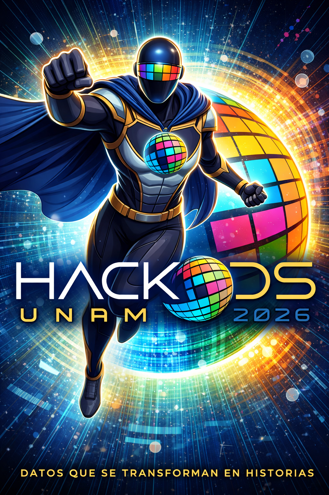

Introducción
al storytelling
Luis Miguel de la Cruz Salas
Depto. de Recursos Naturales, IGEF-UNAM
2026-03-24
Contenido
- Génesis.
- ¿Qué es storytelling?
- Storytelling para tableros.
Génesis
En el principio
- Hace 14 mil millones de años …
- … durante el Big Bang
- Materia, energía, tiempo y espacio.
Física
Enseguida
- 300,000 años después …
- Materia y energía se empiezan a fusionar …
- Átomos \(\rightarrow\) Moléculas
Química
Y luego
- 4 mil millones de años atrás …
- en un planeta llamado Tierra …
- Las moléculas se combinaron para formar organismos.
Biología
No hace mucho
- 70,000 años …
- Los organismos pertenecientes a las especies Homo (habilis, erectus, neanderthalensis, floresiensis, sapiens) formaron estructuras mucho más elaboradas llamadas Culturas.
Historia
Regresemos un poco
La tierra se formó hace ~4,500 millones de años.
| Especie | Aparición | Desaparición |
|---|---|---|
| Dinosaurios | 240 | 65 |
| Homo habilis | 2.4 | 1.4 |
| Homo erectus | 1.9 | 0.1 |
| Homo sapiens | 0.3 | ¿? |
(Millones de años)
{kind=link}
Revolución cognitiva ~ 70,000 años.
{kind=link}
{kind=link}

Dos revoluciones más.
Agrícola ~12,000 años.
{kind=link}
Científica ~500 años.

Homo deus
El homo sapiens es la única especie que domina y manipula el planeta entero (y sus alrededores).
¿Se puede imaginar un ser superior al homo sapiens sobre la tierra?
¿Será que estamos por terminar con la historia del homo sapiens y comenzar algo completamente diferente?
¿Que es lo humano hoy en día?
Somos la primera especie que debe demostrar a las máquinas que no es un robot, Juan Villoro.

Somos seres conscientes de nuestra propia existencia, de nuestros límites y con capacidad de reflexión sobre nuestros actos.
Somos seres emocionales, sociales y culturales.
Nos adaptamos a nuestro entorno.
El contacto humano se está perdiendo en la era digital (identidad).
El efecto Flyn: debut y despedida.
- James Flyn estudió la evolución de la inteligencia humana y se basó en tests del cociente intelectual (CI).
- El CI de la humanidad creció en 30 puntos en algunos países durante el siglo XX.
- Efecto Flyn: aumento sostenido de la inteligencia.
- Flyn murió en diciembre de 2020, justo cuando se descubrió que la capacidad cognitiva estaba disminuyendo.
(Villoro, J., 2024)
El fin de la inteligencia.
El fin de la inteligencia: humanos con caducidad. Juan Villoro. Gato Pardo 24/20/2024.
- Peter Dockrill: la humanidad alcanzó su pináculo intelectual a mediados de los años setenta ScienceAlert.
- David Robson : a partir de los 90 el CI desciende a un ritmo de 0.2 puntos al año en Finlandia, Noruega y Dinamarca BBC Future.
- Will Conaway: La tecnología aumenta mientras el CI declina, Forbes.
¿Por qué?
- Ante la amenaza de un mamut, los antiguos homínidos se ponían de acuerdo, pues era un asunto de vida o muerte. La vida social les permitió aumentar su capacidad cognitiva.
- Pablo Rudomín distingue entre inteligencia individual e inteligencia social; la segunda va en decaimiento.
- El panorama empeora al hacer otra comparación: el CI decae al tiempo que la inteligencia artificial mejora.
(Villoro, J., 2024)
P(doom): probabilidad de resultados existencialmente catastróficos como resultado de la inteligencia artificial.
Política y ética.
A la relación que mantienen los animales humanos, como tú y como yo, con los otros animales humanos, lo llamamos política. […] al modo en que lo hacemos lo llamamos ética. David Pastor Vico.
Toda la cultura proviene de un peculiar invento griego: la conversación […] intercambiar palabras sin rumbo fijo, aceptar las curiosidades y opiniones del otro, aplazar las certezas, admitir las dudas. J. Borges de acuerdo con Juan Villoro.
¿Que podemos hacer?
S(pecific) M(easurable) A(chievable) R(elevant/ealistic) T(ime-bound)

- Debemos conocer cómo estamos actualmente.
- Analizar la información con que contamos.
- Visualizar esa información.
- Contar historias que entienda toda nuestra sociedad
Storytelling
¿Qué es el Storytelling?
Storytelling (ChatGPT)
El storytelling es la técnica de contar historias con un propósito, generalmente para comunicar ideas, enseñar, persuadir o generar conexión emocional con una audiencia. No se trata solo de narrar algo, sino de estructurar un mensaje en forma de historia para que sea más memorable, comprensible y significativo.
Una buena historia: genera emociones, facilita la memoria, ayuda a dar sentido a la información, crea empatía con personajes o situaciones.
Storytelling with data.
El storytelling es un diferenciador y no solo un decorado sobre gráficas.
Puntos importantes:
- Dramatismo.
- Divulgación.
- Fuentes confiables.
- Visualizaciones efectivas.
La pirámide de Freytag.
- Técnica desarrollada por el dramaturgo alemán Gustav Freytag en 1863.
- Es un modelo de estructura narrativa de cinco actos que organiza la tensión dramática.
- Comúnmente utilizada para analizar tragedias clásicas y shakesperianas.
- Hoy en día se sigue usando en películas y obras de teatro.
Partes de la pirámide.
| Exposición (Introducción) | Se presentan los personajes, el escenario y el conflicto central |
| Acción ascendente (Complicación) | La tensión aumenta a medida que el protagonista se enfrenta a complicaciones y obstáculos. |
| Clímax (Momento crucial) | El punto culminante y de mayor impacto emocional, a menudo un punto de no retorno para el protagonista. |
| Acción descendente (Disminuye la tensión) | Las consecuencias del clímax comienzan a desarrollarse. |
| Desenlace (Catástrofe/Resolución) | La resolución final del conflicto. En la tragedia clásica, suele ser la caída o muerte del protagonista. |
Storytelling para tableros.
Filosofía de diseño narrativo
- El tablero no es una colección de gráficas, es una historia que el usuario vive mientras se desplaza en las diferentes secciones.
- Cada sección corresponde a una etapa de la pirámide de Freytag, y la transición entre ellas debe sentirse como un giro emocional, no como un cambio de pestaña.
Acto 1 — El Gancho.
“¿Qué tiene que ver esto contigo?”
Exposición con tensión inmediata.
Objetivo narrativo: anclar el problema global en algo local e íntimo.
- No empezar con “el mundo enfrenta…” sino con un dato que golpee: “En tu colonia, 85% de los hogares…”
Acto 2 — La Escalada
“¿Qué tan grave es?”
Rising action: mostrar cómo empeora el asunto.
Objetivo narrativo: construir tensión con datos dependientes del tiempo.
- El público debe sentir que el tiempo se acaba.
Acto 3 — El Clímax
“El momento de la verdad”
La gráfica que cambia todo.
Objetivo narrativo: una visualización que condensa la paradoja o la injusticia central.
- Debe ser la imagen que el público recuerde al cerrar el tablero.
Acto 4 — La Caída
“Pero no todo está perdido”
Falling action: mostrar casos de éxito locales reales.
Objetivo narrativo: romper el pesimismo con evidencia.
- No usar promesas institucionales, sino con datos, mostrar las acciones de comunidades que están haciendo el esfuerzo (y que probablemente van mejorando), además de mostrar cómo.
Acto 5 — La Resolución
“Tú puedes ser parte del cambio”
Llamado a la acción basado en datos.
Objetivo narrativo: el tablero termina con una pregunta abierta, no con una conclusión cerrada.
- El público debe sentir que tiene poder de actuar, que no es un espectador pasivo sino alguien cuyas decisiones o acciones importan.
Comentarios adicionales.
Lo anterior se basa en el diseño de videojuegos, donde la acción del jugador es fundamental.
Los mejores tableros de datos hacen lo mismo, convierten al público en protagonista, no solo en audiencia.
En el contexto del tablero de ODS, significa que al terminar de ver los datos, el usuario no piensa “qué triste, qué problema tan grande” y cierra la pestaña, sino que piensa “yo puedo hacer algo al respecto”.
Es lo contrario de la parálisis por análisis (doom scrolling): cuando los datos son tan abrumadores que en lugar de motivar, paralizan.
En resumen.
- Aplica la pirámide de Freytag (hasta donde sea posible).
- Termina con una pregunta abierta en lugar de una conclusión cerrada.
- Muestra casos donde comunidades pequeñas están logrando cambios reales.
- Trata de incluir una calculadora de impacto donde el usuario experimente con variables.
- Que el lenguaje diga “¿qué harías tú?” en lugar de “esto es lo que los gobiernos deben hacer”.
Notas sobre divulgación (de Régules, 2024)
- Una buena divulgación […] ilustra ideas a través de historias de gente […] se basa en técnicas de la escritura literaria.
- creative nonfiction: historias reales bien contadas.
Buena divulgación:
- Cuidan el estilo y complementan los resultados científicos con anécdotas, se organizan como argumentos lógicos y/o narraciones.
- Evitan acomplejar al lector esquivando discretamente el lenguaje técnico y no suenan a artículos científicos.
Referencias.
Harari, Y. N. (2025). Sapiens: A Brief History of Humankind.[Tenth Anniversary Edition] United States: HarperCollins.
Harari, Y. N. (2016). Homo Deus: A Brief History of Tomorrow. United Kingdom: Random House.
Villoro, J. (2024). No soy un robot: La lectura y la sociedad digital. Spain: Editorial Anagrama.
Pastor Vico, D. (2021). Ética para desconfiados. México: Planeta México.
Régules, S. d. (2024). Y sin embargo te mueve: Deleitar, conmover y persuadir con la ciencia. Mexico: Libros Grano de Sal.
Todas las gráficas fueron creadas con Leonardo IA, excepto las que tienen atribución.
Narrativas con datos